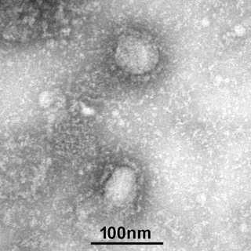

SARS-CoV-2에 의해 발병하는 급성 호흡기 질환이자, 2019년 12월 부터, 2020년 4월 현재까지 진행중인 범유행전염병이다. SARS-CoV-2는 2003년 사스, 2015년 메르스 바이러스와 같이 코로나바이러스 계열의 변종이다. 2019년 12월 12일 최초 보고되었으며, 보고 내용에 따르면 2019년 12월 1일 중국 후베이성 우한시에서 첫 환자가 생겼다. 그러나 최초 발생 원인과 전파 경로는 아직까지도 정확하게 밝혀지지 않았다.

2020년 1월부터는 전 세계로 퍼지기 시작하여, 남극과 일부 국가를 제외한 지구상 모든 나라와 대륙으로 확산되며 많은 감염자와 사망자를 기록하고 있다. 세계보건기구(WHO)는 2020년 1월 31일, 국제적 공중보건 비상사태를 선포했고, 2월 28일부로 코로나19의 전 세계 위험도를 ‘매우 높음’으로 격상하였으며, 3월 11일 마침내 코로나바이러스감염증-19가 범유행전염병이라고 선언했다.